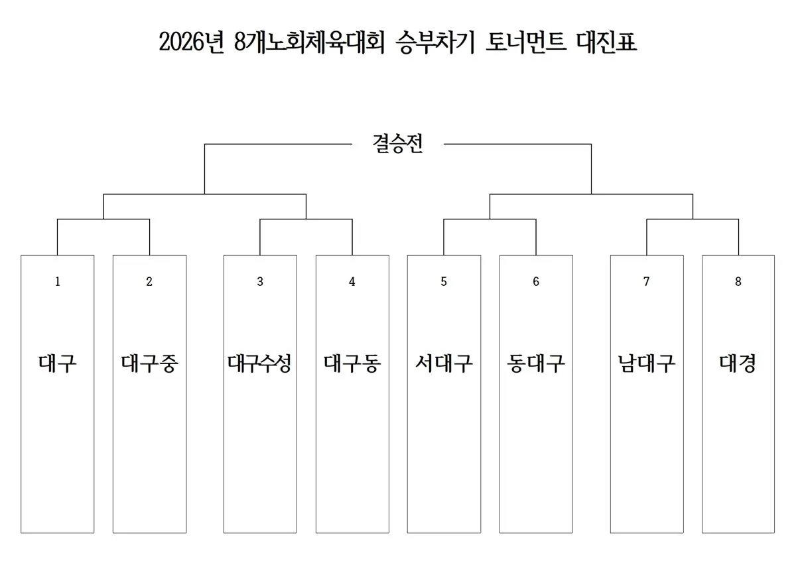
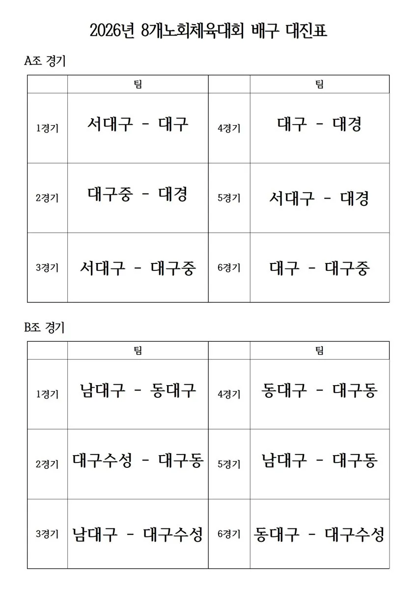
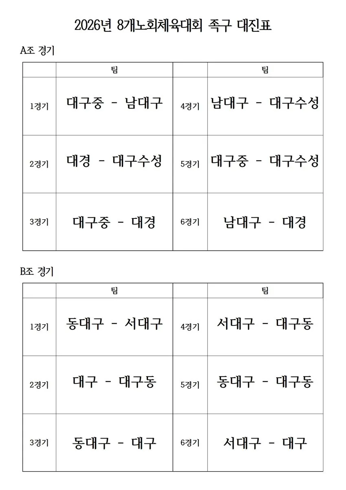

대구 8개 노회 목회자 체육대회 D-14, 준비 막바지
— 축구 승부차기 신설, 사모·어르신 번외경기도
10월 29일 대구 시민운동장 실내체육관에서 제29회 대회 개최. 대진표 확정, 59개 교회가 대회 책자 광고 협찬으로 힘을 보탰다.
대구지역 8개 노회 목회자들이 한자리에 모이는 「2026년 대구지역 8개 노회 목회자 체육대회」가 오는 10월 29일(목) 오전 9시 30분 대구 시민운동장 실내체육관에서 열린다. 대구교직자협의회가 주최하고 대구수성노회가 주관하는 올해 대회는 1993년 6개 노회로 시작한 친선 체육대회의 제29회 대회로, 기존 배구·족구에 축구 승부차기를 새 종목으로 더했다. 대회를 2주 앞둔 현재 종목별 대진표가 확정됐고 대회 책자 광고 모집도 마무리됐다.
대구수성노회 주관, 이정근 대회장 체제로 준비
올해 대회는 대구수성노회 노회장 이정근 목사(드림교회)가 대회장을, 대구교직자협의회 회장 정명철 목사(대흥교회)가 주최 대표회장을 맡았다. 실무는 준비위원장 박은제 목사(성원교회)를 중심으로 진행위원장 라아론 목사(북성교회), 심판위원장 김종균 목사(대구동성교회), 관리위원장 서경원 목사(만촌중앙교회), 서기 이대범 목사(대현교회), 회계 추연식 장로(드림교회)가 분담하고 있다.
여기에 8개 노회 서기들이 준비위원으로, 각 노회에서 1명씩 선임된 실무위원이 참여해 노회별 선수 선발과 참가비 납부, 광고 모집, 심판 요원 추천 등을 맡았다. 준비위원회는 지난 4월 체육관 예약과 1차 준비위원회를 시작으로 5월 2차 회의에서 신설 종목(축구 승부차기)과 사모·어르신 번외경기를 확정했고, 6월 11일 준비위원과 실무위원이 함께한 전체 모임에서 경기 규칙 설명과 조 배치 추첨을 진행했다.
배구·족구는 A·B조 리그, 승부차기는 토너먼트
심판위원회가 내놓은 「경기운영 및 심판 배치도」에 따르면 배구와 족구는 8개 노회를 A·B 두 조로 나눠 예선 리그전을 치른다. 각 조 1위는 결승전, 각 조 2위는 3·4위전에 나서고, 5~8위는 예선전 공격 점수가 많은 순서로 정한다. 올해 처음 도입되는 축구 승부차기는 8강 토너먼트로 치러지며, 8강과 4강을 거쳐 결승전과 3·4위전으로 순위를 가린다.
| 종목 | A조 | B조 |
|---|---|---|
| 배구 | 서대구 · 대구 · 대경 · 대구중 | 남대구 · 동대구 · 대구수성 · 대구동 |
| 족구 | 대구중 · 남대구 · 대경 · 대구수성 | 동대구 · 서대구 · 대구 · 대구동 |

종목별 경기 규정
- 배구 — 9인제, 15점 1세트. 한 교회 선수는 최대 2명까지다. 서브는 1회로 제한하고 순서대로 하며, 서브할 때 선을 침범하면 실점한다. 작전 시간은 세트당 1회, 30초 이내로 주심 승인을 받아야 한다.
- 족구 — 5인제, 11점 1세트. 50세 이상 선수 1명을 반드시 포함해야 하고, 부목사는 1명, 한 교회 선수는 1명으로 제한한다. 서브는 공을 들고 하며 선수 전원이 참여해 오른쪽 뒤 수비수부터 시계 방향으로 돌아간다. 서브 때 선을 침범하면 실점하고, 작전 시간은 세트당 1회, 30초 이내로 주심 승인을 받아야 한다.
- 축구 승부차기 — 골키퍼를 포함해 노회당 5명이 나서며, 노회 소속 목회자(부목사 포함)는 누구나 출전할 수 있다. 출전 선수는 가능한 한 한 교회당 1명으로 한다. 양 팀이 5회씩 번갈아 차고, 동점이면 서든데스로 승부를 가린다.
배구와 족구는 선수 중복 출전이 가능하다. 종목별 점수는 1위 100점, 2위 80점, 3위 70점, 4위 60점이며, 배구·족구는 5~8위에 각 40점을 준다. 경기 시간과 현장 상황에 따라 규정은 바뀔 수 있다.
승부차기, 6m 거리에 에어 골대·안전공 사용
신설 종목인 승부차기는 실내 체육관 여건에 맞게 세부 규정을 따로 마련했다. 페널티킥 거리는 기본 6m로 하되 경기장 여건에 따라 5~7m 범위에서 최종 조정한다. 골대는 실내 전용 에어 접이식 미니 골대를 쓰고, 공은 부상 방지와 안전을 고려해 5호 규격 안전공을 쓴다.
키커는 반드시 주심의 호루라기 신호 뒤에 공을 찬다. 골키퍼는 키커가 공을 차는 순간까지 골라인 위에 있어야 하며, 이를 어기면 다시 차게 한다. 골대를 맞고 나오거나 골키퍼가 막은 공을 다시 차서 넣는 것은 득점으로 인정하지 않는다. 별도의 작전 시간은 없다. 골키퍼 장갑은 각 노회나 선수가 직접 준비한다. 손과 손목 부상을 막기 위해 착용을 권장하며, 일반 골키퍼 장갑과 풋살 장갑, 스포츠 장갑 모두 쓸 수 있다.
8개 노회가 추천한 심판진 24명
심판진은 8개 노회가 고르게 나눠 맡는다. 각 노회가 배구·족구·축구 승부차기 종목별로 1명씩 모두 3명을 추천해 24명의 심판진이 꾸려졌다. 배구와 족구는 주심 1명과 선심 2명이, 승부차기는 주심 1명이 경기를 맡는다. 심판진은 심판위원장 김종균 목사의 총괄 아래 경기를 운영하고 판정한다.
| 노회 | 배구 | 족구 | 승부차기 |
|---|---|---|---|
| 남대구 | 이종재 | 김우성 | 신재우 |
| 대경 | 송홍흡 | 송주현 | 강만중 |
| 동대구 | 백성직 | 김형백 | 강승중 |
| 대구동 | 이동환 | 이상범 | 피승민 |
| 대구수성 | 이성창 | 안윤칠 | 김태명 |
| 대구 | 김종국 | 김우석 | 허종현 |
| 서대구 | 김성곤 | 이춘희 | 김성현 |
| 대구중 | 김정대 | 신경호 | 김신일 |
경기마다 '제3 노회' 심판이 휘슬
판정 시비를 막기 위해 모든 경기는 맞붙는 두 노회가 아닌 다른 노회 심판이 맡는다. 예컨대 배구 A조 첫 경기인 서대구-대구전은 대경노회 송홍흡 심판이, 족구 B조 첫 경기인 동대구-서대구전은 대구동노회 이상범 심판이 진행한다. 승부차기 준결승과 결승에서는 심판이 출전 팀과 같은 노회 소속이면 다른 노회 심판으로 바꾼다.
| 배구 | A조 대진 / 심판 | B조 대진 / 심판 |
|---|---|---|
| 1경기 | 서대구-대구 / 대경 송홍흡 | 남대구-동대구 / 대구동 이동환 |
| 2경기 | 대구중-대경 / 서대구 이춘희 | 대구수성-대구동 / 남대구 이종재 |
| 3경기 | 서대구-대구중 / 대구 김종국 | 남대구-대구수성 / 동대구 백성직 |
| 4경기 | 대구-대경 / 대구중 김정대 | 동대구-대구동 / 대구수성 이성창 |
| 5경기 | 서대구-대경 / 대구 김종국 | 남대구-대구동 / 동대구 백성직 |
| 6경기 | 대구-대구중 / 대경 송홍흡 | 동대구-대구수성 / 남대구 이종재 |

| 족구 | A조 대진 / 심판 | B조 대진 / 심판 |
|---|---|---|
| 1경기 | 대구중-남대구 / 대구수성 안윤칠 | 동대구-서대구 / 대구동 이상범 |
| 2경기 | 대경-대구수성 / 대구중 신경호 | 대구-대구동 / 동대구 김형백 |
| 3경기 | 대구중-대경 / 남대구 김우성 | 동대구-대구 / 서대구 김성곤 |
| 4경기 | 남대구-대구수성 / 대경 송주현 | 서대구-대구동 / 대구 김우석 |
| 5경기 | 대구중-대구수성 / 남대구 김우성 | 동대구-대구동 / 서대구 김성곤 |
| 6경기 | 남대구-대경 / 대구중 신경호 | 서대구-대구 / 대구동 이상범 |

| 승부차기 | 대진 | 심판 |
|---|---|---|
| 8강 1경기 | 대구-대구중 | 남대구 신재우 |
| 8강 2경기 | 대구수성-대구동 | 대경 강만중 |
| 8강 3경기 | 서대구-동대구 | 대구동 피승민 |
| 8강 4경기 | 남대구-대경 | 대구중 김신일 |
| 준결승 1 | — | 대구 허종현 |
| 준결승 2 | — | 서대구 김성현 |
| 결승 | — | 대구수성 김태명 · 동대구 강승중 |
"판정 존중, 이의는 팀 대표만"
심판위원회는 목회자 친선 체육대회의 취지를 살리기 위해 판정 관련 공통 원칙도 정했다. 모든 심판위원은 경기 전 종목 규정을 숙지하고 공정하고 일관된 판정을 위해 협력한다. 규정 해석에 이견이 있으면 주심의 판단과 대회 운영위원회의 최종 결정에 따른다. 선수 안전을 최우선으로 해 경기장과 경기 용구의 안전 상태도 미리 확인한다.
- 판정 존중 — 모든 참가자는 심판의 판정을 존중하고 그 결정에 따른다.
- 이의 제기 — 판정에 대한 이의는 팀 대표만 정중하게 제기할 수 있으며, 최종 결정은 심판에게 따른다.
- 질서 유지 — 판정 항의로 경기를 지연하거나 중단해서는 안 된다. 2번 경고 후에는 퇴장이며, 소란을 일으키면 몰수패가 선언된다.
사모와 어르신도 함께 뛴다
올해 대회는 선수로 뛰는 목회자뿐 아니라 사모와 원로 목회자도 참여할 수 있게 번외경기를 마련했다. 사모 번외경기 '안방 마님 레이스'는 노회별 5명씩 모두 40명이 참가해 두 팀으로 나뉘어 겨루는 릴레이다. 고무장갑·앞치마·머리띠를 착용하고 반환점을 돌아 다음 주자에게 아이템을 넘기는 방식이며, 참석자 전원이 시상을 받는다.
어르신 번외경기 '걱정은 무너지고, 건강은 세우고'는 만 65세 이상 목사와 사모가 참가하는 실버 볼링이다. 대형 플라스틱 볼링 핀을 소프트볼로 쓰러뜨리는 경기로, 참가자 전원에게 기본 선물을 주고 핀을 모두 쓰러뜨리면 상품을 더 준다.
1부 예배로 문 열고 우승기 전달로 마무리
대회는 예배로 시작한다. 1부 예배는 준비위원장 박은제 목사의 인도로 찬송 「내 주는 강한 성이요」를 함께 부르고, 대경노회장 김성택 목사(칠곡내일교회)가 기도하며, 남대구노회장 여창섭 목사(논공교회)가 성경을 봉독한다. 대회장 이정근 목사가 갈라디아서 6장 9절을 본문으로 「때가 이르매 거두리라」라는 제목의 말씀을 전하고, 동대구노회장 두인균 목사가 축도한다.
이어지는 2부 개회식은 진행위원장 라아론 목사의 사회로 진행된다. 정명철 대표회장의 대회사와 이정근 대회장의 환영사에 이어 총회 부총회장 송기섭 목사가 축사를, 총회 부서기 박기준 목사가 격려사를 전한다. 내빈 인사 후 대구수성노회 실무위원이 선수 선서를 하고, 심판위원장 김종균 목사가 경기 규칙을 발표한다.
경기 중간에도 기도가 이어진다. 오전 경기는 대구동노회장 피승민 목사, 점심 식사는 서대구노회장 박정석 목사, 오후 경기는 대구중노회장 오세태 목사가 기도로 연다. 3부 시상식은 동대구노회장 두인균 목사의 기도로 시작해 준비위원장 박은제 목사가 성적을 발표하고, 대회장 이정근 목사가 시상한다. 이어 대구수성노회가 우승기를 전달하고 대구노회장 김귀식 목사의 축도로 대회를 마친다.
| 구분 | 순서 | 담당 |
|---|---|---|
| 1부 예배 | 인도 | 준비위원장 박은제 목사 |
| 찬송 | 「내 주는 강한 성이요」 | |
| 기도 | 대경노회장 김성택 목사(칠곡내일교회) | |
| 성경봉독 | 남대구노회장 여창섭 목사(논공교회) | |
| 설교 | 「때가 이르매 거두리라」(갈 6:9) — 대구수성노회장 이정근 목사 | |
| 축도 | 동대구노회장 두인균 목사 | |
| 2부 개회식 | 사회 | 진행위원장 라아론 목사 |
| 대회사 | 대구교직자협의회 대표회장 정명철 목사 | |
| 환영사 | 대구수성노회장 이정근 목사 | |
| 축사 | 총회 부총회장 송기섭 목사 | |
| 격려사 | 총회 부서기 박기준 목사 | |
| 내빈 인사 | 사회자 | |
| 선수 선서 | 대구수성노회 실무위원 | |
| 규칙 발표 | 심판위원장 김종균 목사 | |
| 오전 경기 | 기도 | 대구동노회장 피승민 목사 |
| 점심 | 기도 | 서대구노회장 박정석 목사 |
| 오후 경기 | 기도 | 대구중노회장 오세태 목사 |
| 3부 시상식 | 기도 | 동대구노회장 두인균 목사 |
| 성적 발표 | 준비위원장 박은제 목사 | |
| 시상 | 대회장 이정근 목사 | |
| 우승기 전달 | 대구수성노회 | |
| 축도 | 대구노회장 김귀식 목사 |
59개 교회 광고 협찬, 노회 시상비로 쓰인다
대회 책자 광고 모집은 지난 10월 11일 마감됐다. 노회별 광고 협찬 집계에 따르면 7개 노회에서 모두 59개 교회가 협찬에 참여했다. 노회별로는 대구동노회가 15개 교회로 가장 많았고, 대구수성노회 12개, 남대구노회와 대구중노회 각 9개, 서대구노회 7개, 동대구노회 5개, 대경노회 2개 교회 순이었다.
| 노회 | 협찬 교회 수 |
|---|---|
| 대구동노회 | 15개 |
| 대구수성노회 | 12개 |
| 남대구노회 | 9개 |
| 대구중노회 | 9개 |
| 서대구노회 | 7개 |
| 동대구노회 | 5개 |
| 대경노회 | 2개 |
| 합계 | 59개 |
모인 광고비는 해당 노회의 시상비로 쓰인다.
1,000명 규모 대회, 안전 준비도 점검
준비위원회는 약 1,000명이 참가하는 규모에 맞춰 물품 준비 목록도 마련했다. 배구 10개, 족구 8개, 축구 6개 등 공 24개 이상과 8개 노회가 12장씩 쓸 팀 조끼 96장, 실내 전용 에어 접이식 미니 골대, 참가 기념품 1,000개 이상을 준비한다. 특히 참가 인원이 많은 만큼 자동심장충격기(AED) 비치 여부를 반드시 사전에 확인하도록 했다.
남은 일정은 10월 25일까지 최종 대진표 배포, 10월 26일 체육관 점검과 경기 준비물 최종 확인, 대회 전날인 10월 28일 최종 준비위원회(점검회의)다.
1993년 6개 노회에서 8개 노회 연합 축제로
대구지역 목회자 친선 체육대회는 1993년 6개 노회로 처음 열렸다. 2011년 제16회 대회 때 7개 노회, 2014년 제19회 대회부터 8개 노회가 참여하는 대회로 자리 잡았다. 배구와 족구를 중심으로 볼링·팔씨름(2013년), 줄당기기(2014년~), 사모 족구·스크린골프(2024년), 탁구(2025년) 등 해마다 종목을 바꿔 가며 이어 왔다. 올해 축구 승부차기가 더해지면서 대회는 다시 한 번 새 얼굴을 갖추게 됐다.
■ 참가 및 경기 관련 문의는 각 노회 준비위원(노회 서기)과 실무위원에게 하면 된다.
■ 본 기사는 대회 준비위원회의 「전체 준비 계획서」와 종목별 대진표, 노회별 광고 협찬 현황 자료를 바탕으로 작성했다. 예장포커스는 대회 당일 경기 결과와 시상 소식을 이어서 전할 예정이다.